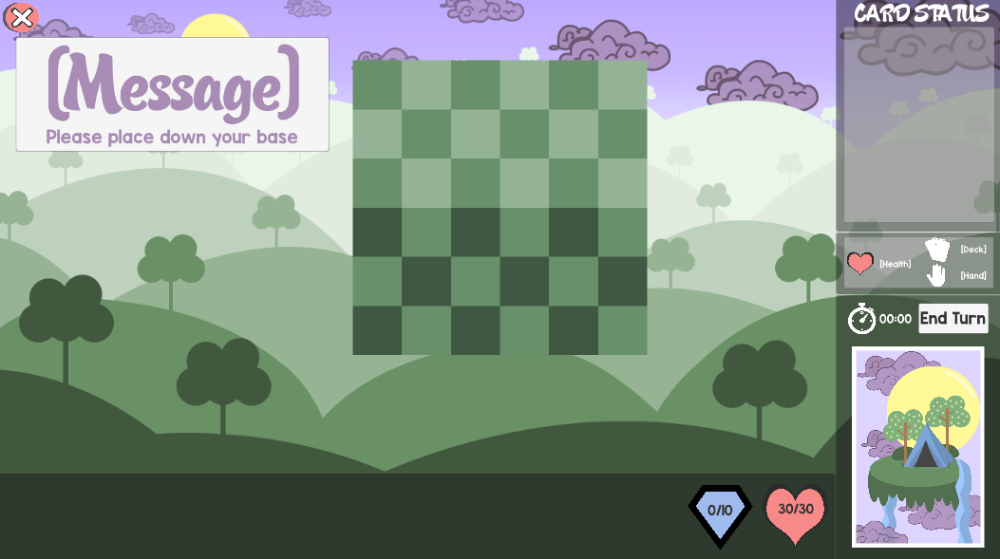

Paint | Complete
A simple painting program that will run in your browser.
Gives the option to save and clear the drawing.
Code
P5
Html

Mimic | Complete
A game that tests your ability to recognize a musical note.
Instructions:
1. Play with the notes. Famliliarize yourself with each notes.
2. Click Play Button (Labeled with "1").
3. Click Record Button (Labeled with "2").
4. Use your keyboard to input what you think each notes was.
5. Click Check Button (Labeled with "3").
This check your answers, if you are right, then click "Play" again
to move onto the next set of notes.
If you are wrong, the try again with the Record button.
Code
P5
Html

Five Kingdoms | Hiatus
Five Kingdom (working name) is a single player
role playing adventure game made using Unity.
The player will be able to fight monsters,
farm food and create items to restore HP.
Code
Unity3D
PyxelEdit
C#

Tiny Civs | Partly completed | Hiatus
Tiny Civs is a 2D strategic turn based card game that is played on a 6 x 6 grid field split in
half horizontally. Each player designate a grid on their side of the grid board to be their Base.
The basic objective of the game is to destroy the opponent's Base using a custom made deck.
For this project, I had collaborated with 5 other students from my technical capstone class in LSU.
This project is only in it's early alpha stage which took us about 3 months to get to.
Video Demo Link
Code
Personal Post Moterm
Unity3D
C#
PHP